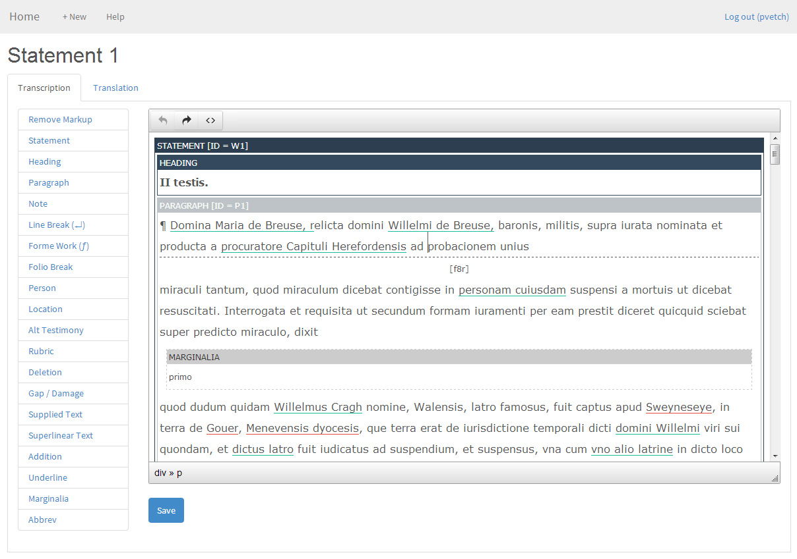

Blog
With standards, without overhead, whither TEI?

One of the long lasting legacies of digital humanities as a field (to date!) has been the emergence of the TEI (Text Encoding Initiative) Guidelines as a standard for representing texts digitally in a way which is fundamentally concerned with the meaning of those texts (as opposed, for instance, to their appearance, or intended use). Creating a good TEI representation to a level suitable for ( - say - ) a scholarly edition requires:
- a thorough understanding of how a document operates - its conventions, its idiosyncracies, the way it is trying to communicate with its reader or receiver, and the context within which it was created.
- gaining some technical knowledge. For a scholarly editor new to text encoding, this normally means developing a practical understanding of how XML markup works, and coming to terms with an unfamiliar syntax in an unfamiliar software program.
Over the years I've come to believe that the first of these is valuable but the second is really not ( - although not everyone would agree with me!). I wanted to explore a more pragmatic approach on this project.
When we worked with Catherine on the Mapping Medieval Chester project (following a pattern used for many others at DDH) we first designed a TEI 'schema' for the project team to work with (defining the key layers of information within the texts that would be recorded), and we set them to work on our standard workflow for textual editing -- a two-day training in markup and working with the schema, and then several months of hard work editing the core texts for the project using the oXygen XML editor. As Catherine reveals in a blog post from 2009 (!), the process was tough and analytic but rewarding.
For City Witness we have another text to edit of course, and we wanted to explore what we could do to keep the analytical rigour inherent to editing according to the principles of TEI, but without the overhead of the training and working with tools and syntax which are basically (and in my view unnecessarily) 'unidiomatic' if you're a textual scholar.
So why not work with Word documents then? There are plenty of tools for converting Word documents to TEI XML and this must be one of the most familiar (if not perhaps best loved) pieces of software around. For us though this isn't practical for a few reasons. Firstly, we want to allow distributed editing, and the best approach for that is to use the web as your editing canvas (avoiding problems with file versions and conflicts, or having to use version control systems). Secondly, we need to keep close track of all of the people, locations, and events that are mentioned in the text, and we need to be sure that as these are encountered in the text that we build up a network of all these references to use later on (we'll be talking more about this later). We're using a database for this, so we need our XML editing environment to be capable of connecting to this database, looking things up in it, and storing things in it.
What we've done then is develop an online editing environment which allows the text to be edited according to our schema, and connected up to 'entities' within the database. The editor (the hard work of Osman Hankir, with schema design and analysis by Eleonora Litta) is web based, and deliberately simple - there is no visible XML. In fact, we don't actually work with TEI XML at all, instead storing editing texts in a richly annotated form of HTML, in a database, which we can transform into TEI XML if we need to - an approach we first tried in the Early English Laws project. Despite the simplicity, the editor allows the texts to be reasonably heavily annotated, with 17 structural and inline elements specific to the text, and 2 types of cross reference to entities (at the moment, people and places) which are drawn our database. The tool also allows the simultaneous editing of parallel texts (transcription and translation).
So far so good -- the tool is proving effective and the editing is going well, and we'll hopefully add it to our set of published Open Source tools on Github soon. You can see a screenshot of the editor in action at the top of this post. Our next challenge, though, is to introduce the ontological layer into all of this - and that may very well be a much more complicated nut to crack.
Şħȧřḗ ǿƞ Ŧẇīŧŧḗř Şħȧřḗ ǿƞ Ƒȧƈḗƀǿǿķ